: From class timer to calendar
A case study in turning a beloved single-purpose utility for high-school students into a calendar platform teenagers actually use.
- Role
- Lead Designer
- Industry
- Social
- Designs circa
- 2022–2025
- Employment type
- Full-time
- Exit
- Acquired by Snap
: From class timer to calendar
A case study in turning a beloved single-purpose utility for high-school students into a calendar platform teenagers actually use.
- Role
- Lead Designer
- Industry
- Social
- Designs circa
- 2022–2025
- Employment type
- Full-time
- Exit
- Acquired by Snap
Saturn exists because of this.
Good morning, Grant High! Quick reminder that today is a B-Day, unless you’re in Flex, in which case it’s a Flex B-Day, which means Period 2 is actually Period 6 and runs 10:41 to 12:07, not 10:09 to 11:45 like on a regular B-Day, and lunch moves to 12:07 except for students attending this morning’s Mandatory Assembly, which runs 9:44 to 10:40, which pushes Period 2/6 to 10:45, which pushes lunch to 12:03 but only until 12:36, and if this were an Early Release Day, which it is not, unless it is, lunch would be at 10:45, and if it were a Late Open Day, which it was yesterday, Period 1 would start at 10:30 and end at 9:32, which we are aware is before it starts, and please note that next week is All 8 Periods, so Period 4 is at 11:01, and Finals Day 2 is January 22nd and also June 5th, which is before Finals Day 1 on June 10th, so plan accordingly, and remember: Flex is not a class, Flex is a state of mind. Have a great day!
Behold the American high school schedule.
It’s a mess of conditional class order, rotating bell schedules, early releases and assemblies. Kids never know what today looks like.
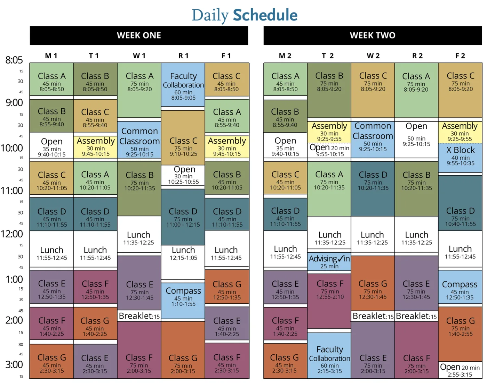
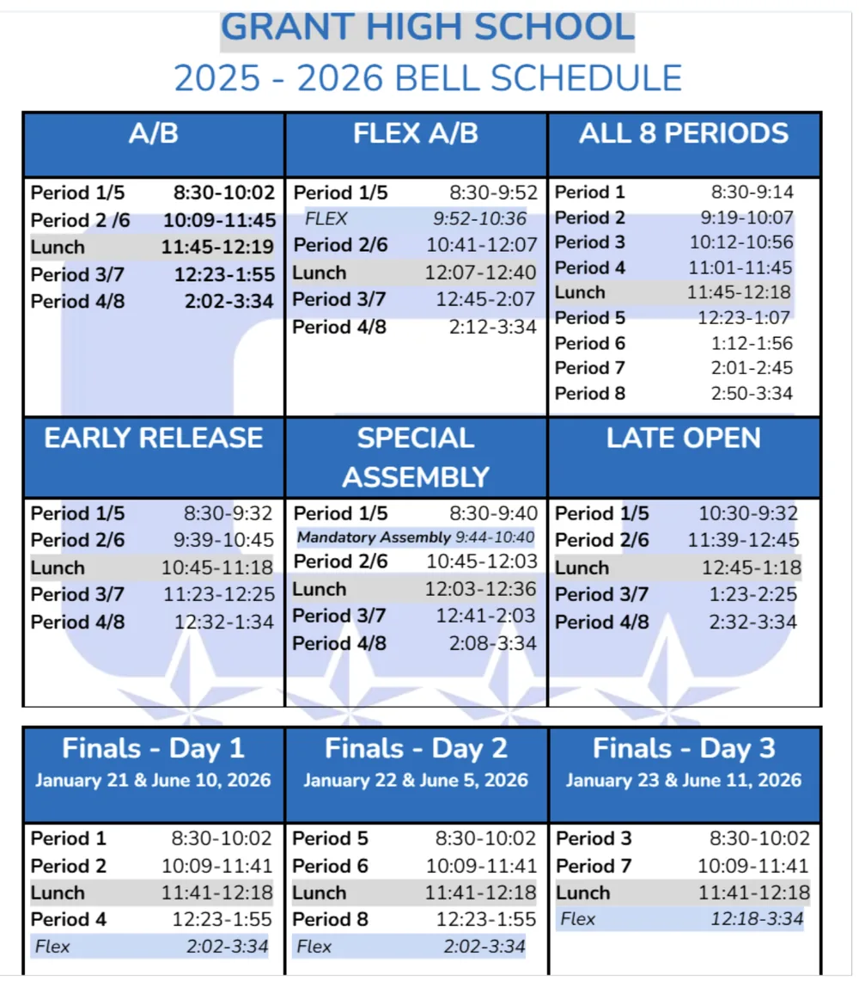
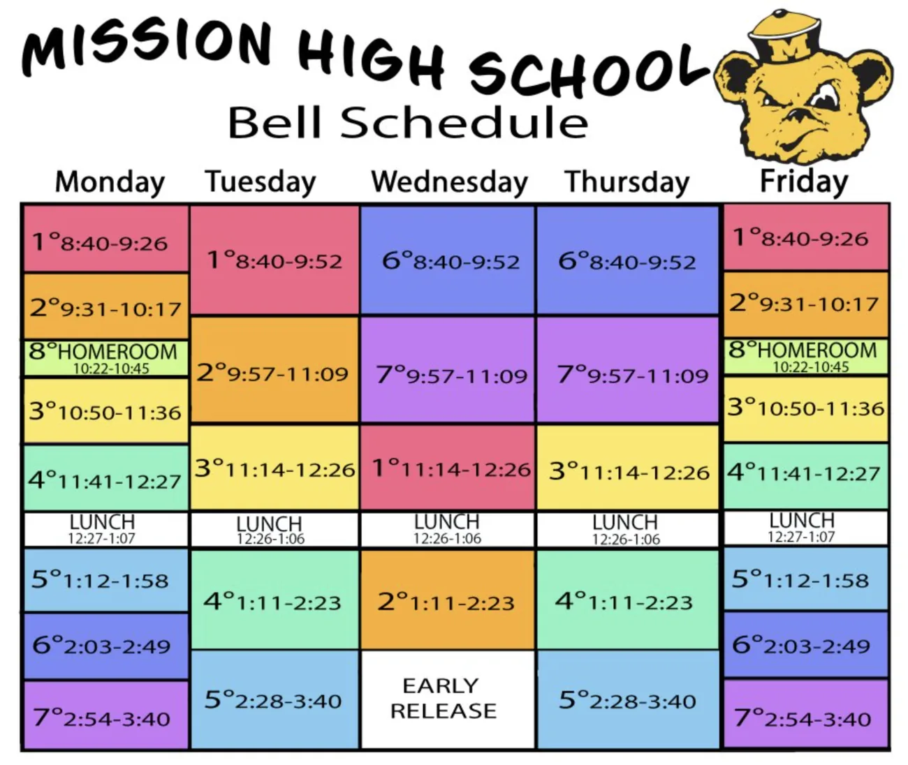
Saturn solved one thing, super well.
Enter your school and classes once, and the app tells you what class you’re in and how many minutes are left. That simple feature made it a viral back-to-school app, and a venture-backed company.
Investors
- General Catalyst
- Insight Partners
- Coatue
- Bezos Expeditions
- Marc Benioff
- Robert Downey Jr.
- Ashton Kutcher
- and more
What was working?
- Onboarding was the flywheel
- Moat was proprietary HS schedule data
- Timer is retentive — high % of DAU, WAU
- Class schedule felt like ‘magic’
- Reliable growth moment every year
- Ambassador program for research and evangelization
- “I love this app!”
Tap the arrow, or the people icon
But, problems were lying in wait.
Interviews with students revealed the many reasons the app didn’t grow most of year. Here are some of the quotes I uncovered.
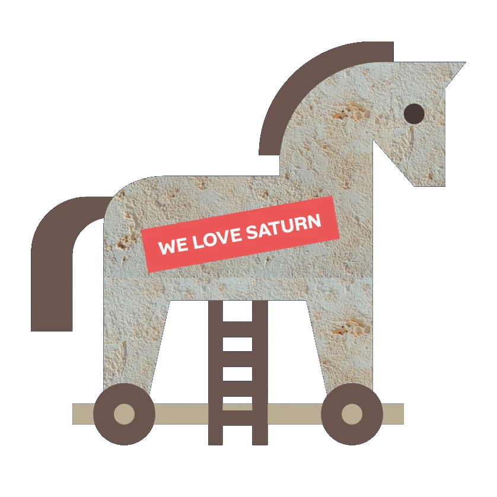
Tap the horse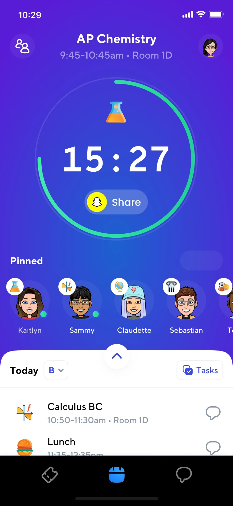
School directory
Class detail page
Add a classmate
Correct schedule
Events/Parties
Profile: My classes
& friends
Compare Schedules
Homework
Chat
A whole world of features was hiding in these entry points.
The big timer was Saturn’s greatest success and also its handcuffs. Its primacy in the UI stymied any other feature from becoming the next big growth driver.
Custom sheet was prone to bugs
Banners became noise
Incentive to add classes after onboarding was low
First-time user experience was under considered.
Onboarding was very effective, but if users didn’t follow the happy path they were left directionless once in the primary experience.
Also, non-standard UI conventions were holding the app back from evolving to its next phase, such as a custom sheet that required dragging, vertical scroll and horizontal swiping.
What guided my thinking?
With the benefit of fresh eyes, and aided by user interviews, I collated my thoughts in the following ways.
This is not a “calendar” app
User base has never used a calendar before
Missing opportunities for growth in social connection/behaviors
Sports? Clubs? Users schedules are “dead”
Calendars/events are inherently complicated objects to create/control
Competing with other productivity tools, mandated or discovered
Eventually, most kids can remember their schedule. The need to check the bell schedule never dissipates.
The Timer is the primary utility driving all usage of the app after October 1st.
Users who had at least one friend on the app, and used it to compare schedules, were higher retained.
Most students are busy after school (sports, clubs) but they “just remember”. Are we a hammer looking for a nail?
Tapping away from the homepage is rare – no amount of red flags or banners or notifications was helping.
Help more first-time users get fully set up?
Provide the right level of calendaring complexity for this user base?
Create more utility in having friends in the app?
Harness the power of a school-wide network while maintaining trust and safety?
Make checking and maintaining your schedule a daily habit?
Increase social behavior but not be included in schools’ social media ban?
Tap a stack
My first attempt that shipped
Live for the last 2 months of the 21–22 school year, this version attempted to make Calendar the star.
Kids missed the big timer, and the onboarding question wasn’t solved.
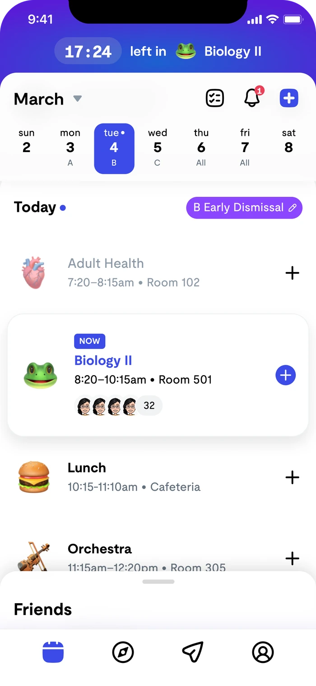
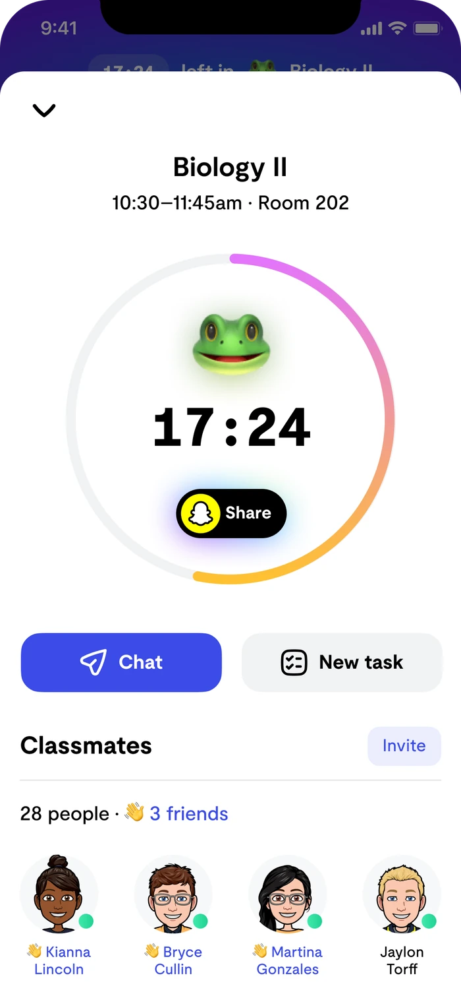
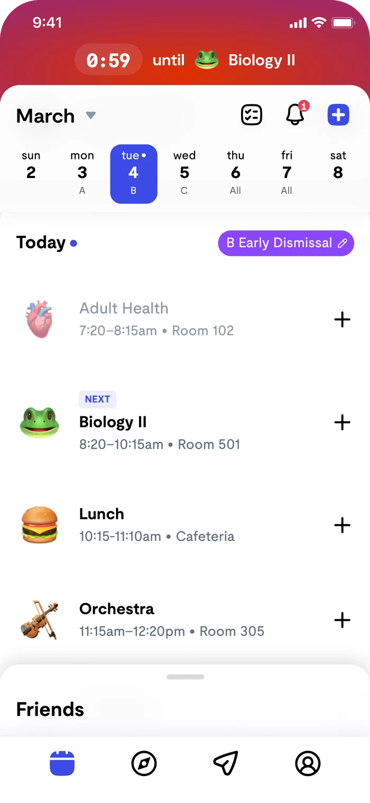
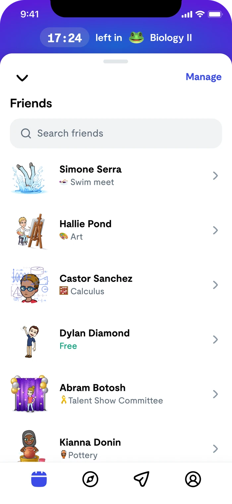
The homepage needed a fresh new start.
Users wanted…
- to know what bell schedule today and tomorrow are, at a glance
- to know how much time until class ends or starts
- know what class their friend is in now/next
- Customization with school color
- Emojis?
Saturn wanted…
- more reasons to invite users to the platform (you MUST be my friend on Saturn)
- Increase usage after school
- a real calendar that can display our proprietary schedule data AND external .ics files
- …Emojis???
Separate calendar from timer, creating the “Now Tab.”
I proposed a new home tab that could shape-shift, in the course of one summer, from an onboarding page, to an excitement-building page, to the time-tracking, schedule-knowing hub Saturn was known for.
Metrics I wanted to move
- Setup completion: students who add every class
- Sessions that touch something other than the timer
- Students with at least one friend on Saturn
- Opens after October 1st, when the novelty wears off
Why this design?
Experimentation
The product team wanted to try lots of features to find new avenues for growth. We needed an interface that was adaptable for experimentation.
Calendar hadn’t earned it
Calendar was unproven as a feature, and inherently complicated. To reach parity or even table stakes with others, it needed its own space to grow.
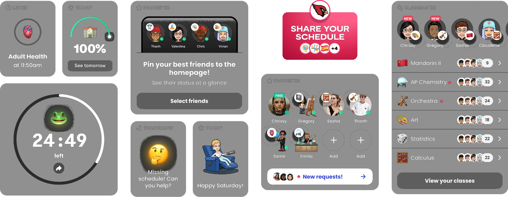
Back-to-School 2022: the biggest season yet.
The Now tab shipped in August alongside the onboarding-as-home flow.
DAU peaked at 337k on 9/6, against a 2021 peak of about 37k: roughly 9× year over year. It was still at 275k on 9/28.
Setup completion rose to 72%, and for the first time users regularly touched features other than the timer.
D30 retention: 31% vs 18% in SY21
WAU peak: 1.1M
After-school remained unsolved.
A product disagreement about what belonged there, plus an over-committed engineering roadmap, left the most valuable real estate in the app fallow from 3pm to 8am.
Also, students reported loving the new design but said things like, “I do wish I could see my whole schedule though” 🤦♀️😑
I designed the new Calendar tab concurrently.
Kids who “just remember” still needed a calendar — just not for classes.
Everything a student can’t “just remember” involves someone else’s time. So the calendar’s reason to exist would be friends.
Why do all calendars look the same?
Before drawing anything, I wrote down why the category converges, so we’d know which conventions to keep and which we could break.
- Device size
- Small screen, big data.
- Density
- A full day, legible at a glance.
- Both axes are taken
- Y is time, X is dates.
- Occlusion
- Overlapping events are the hardest problem.
- Where we could differ
- Bell schedules, friends, and “now.”
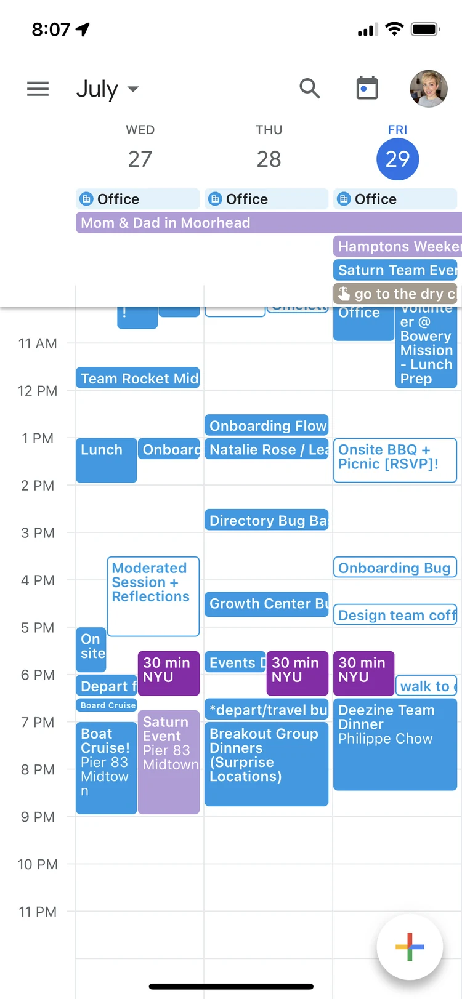
A real calendar, without losing the schedule view.
I kept the list-style schedule view as the default, the habit we already had, and added a true day view one tap away. Classes stayed first-class objects, and we finally shipped dark mode, our most-requested feature.
[Day view: 41% of weekly calendar users]
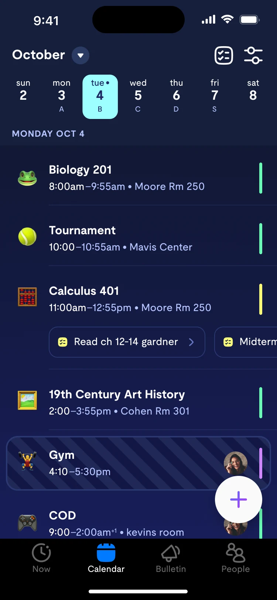
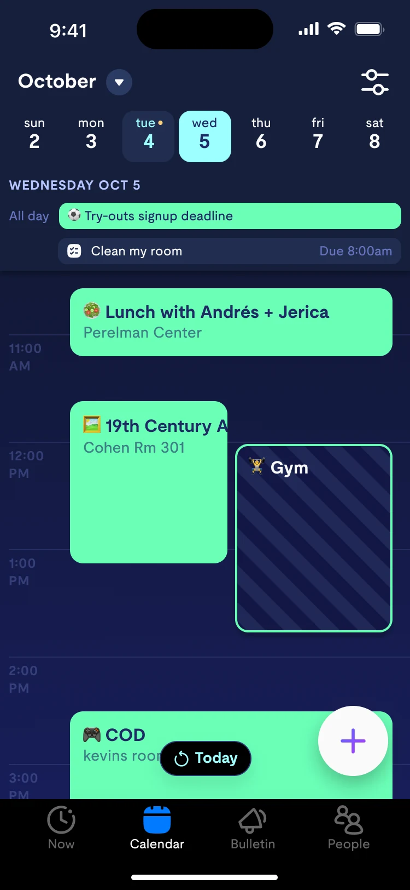
Meet students where their time already lives.
Google Calendar sync meant we stopped competing with GCal and started containing it. Live Activities put the class timer on the Lock Screen and Dynamic Island: what students want most, with zero taps.
+150%app opens after Live Activities launched
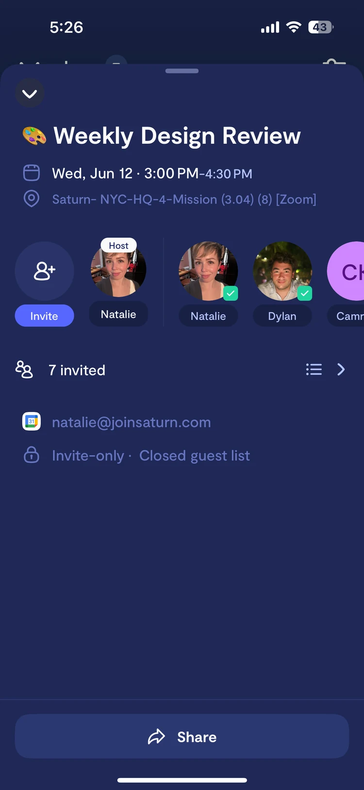
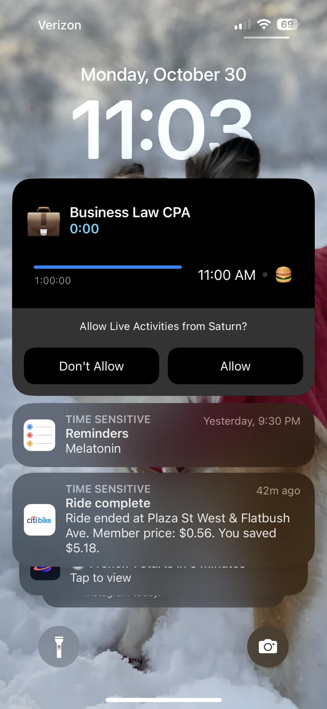
The metrics moved. The identity didn’t.
Setup completion and early retention rose, yet students still called Saturn “the timer app.” We had built two good products that didn’t know they were one.
How might we marry the Now tab and the calendar, and tell one coherent story?
Day view unlocked the feature Saturn was always meant to have: Calendar Compare.
With a real, time-based day for every student, we could lay two side by side. Compare answers the question students actually ask each other: “when are you free?”
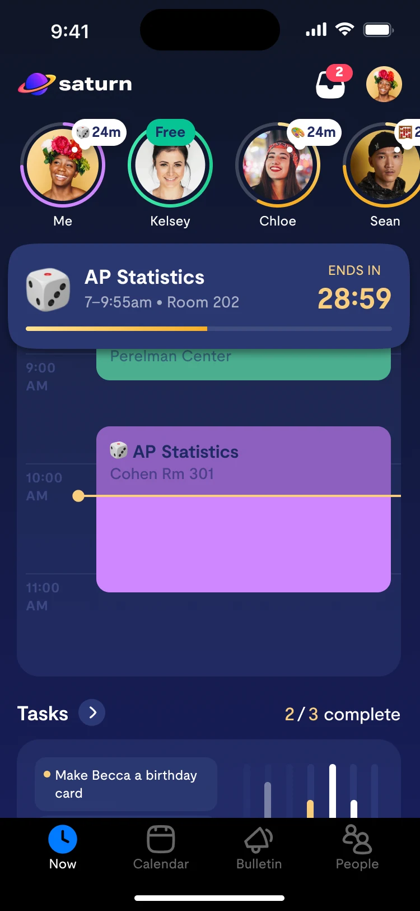
Designing Compare for the awkward states.
Shared free time is the hero. Overlap recedes but never hides. A friend’s classes stay legible without revealing more than they chose to share.
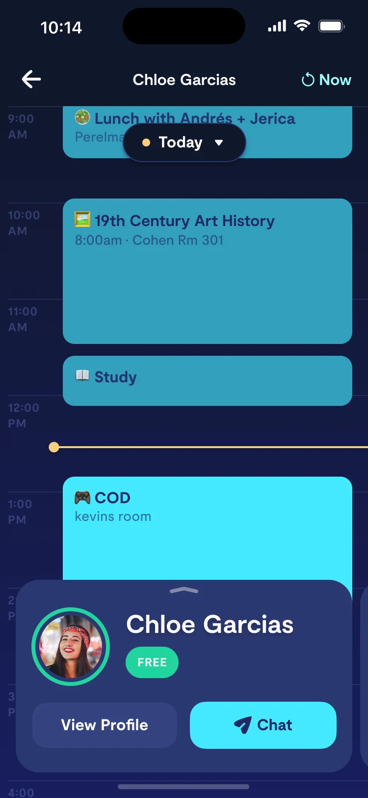
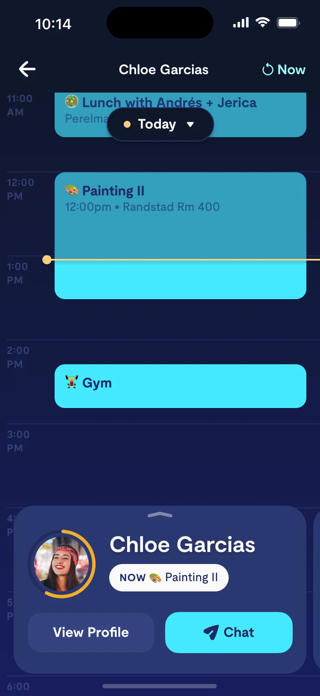
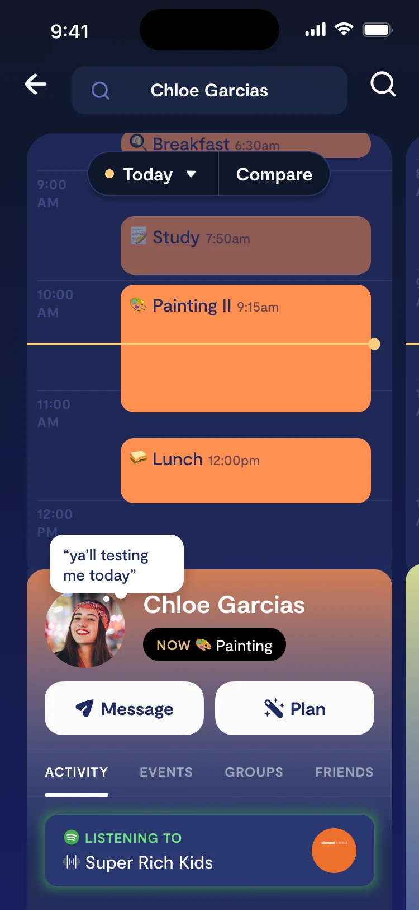
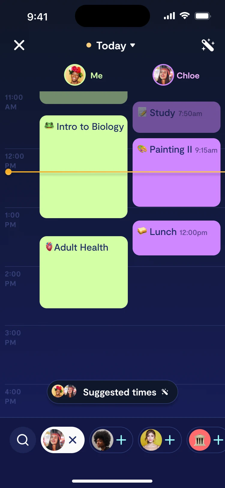
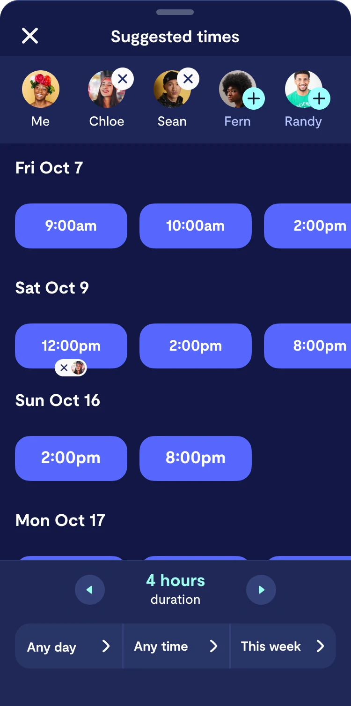
Fall 2024: #1 Productivity app on the App Store.
Ahead of ChatGPT, Gmail and Microsoft during back-to-school. Compare and Live Activities were the features students cited most in reviews.
610kpeak DAU, fall 2024
62%of students with ≥1 friend
4.8★App Store rating
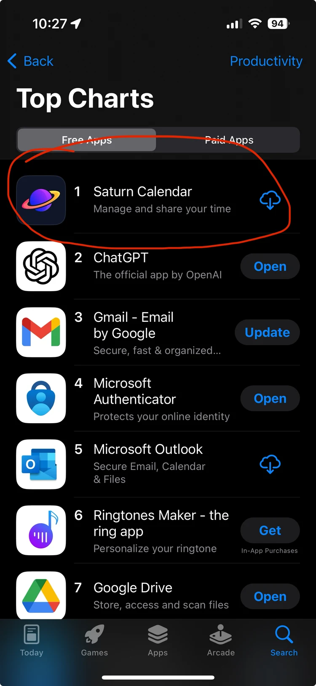
An empty calendar is useless.
Compare exposed the next constraint: outside of classes, most calendars were nearly empty. First I removed friction, rebuilding event creation to be title-first and invite-first. Students care who’s going, not the end time.
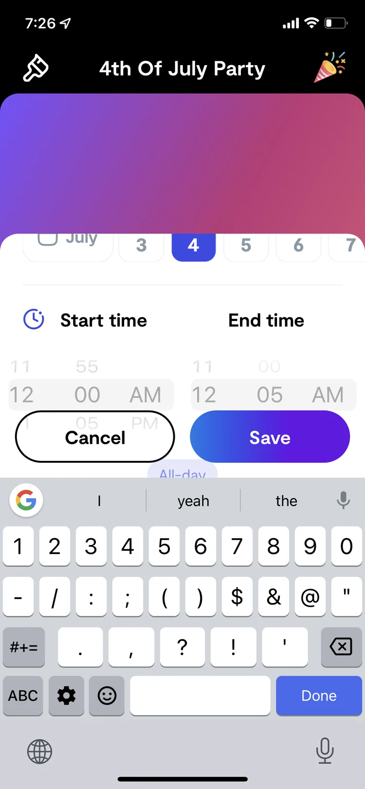
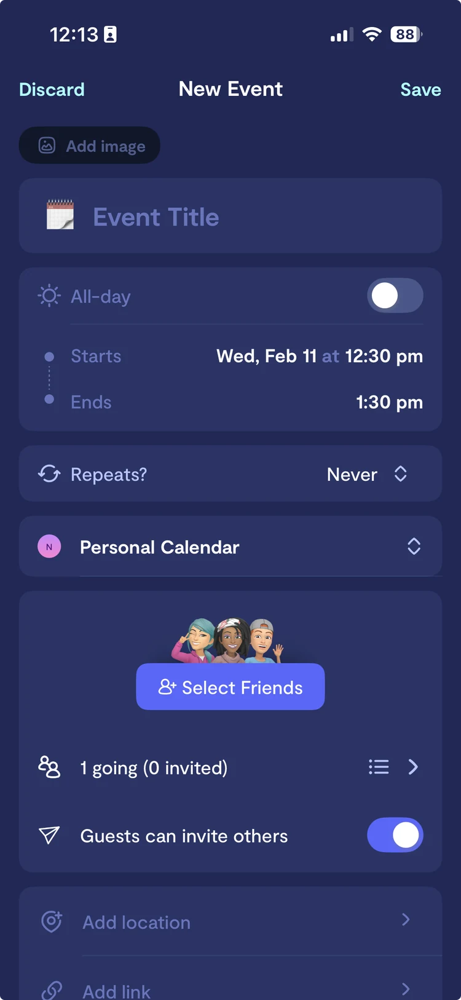
Could students just say what they’re doing, and let Saturn do the rest?
“Chat to create” sits where the timer lives: rattle off “soccer tues 4pm, chem test friday” and an LLM turns it into events, with friends attached. Before scaling it, I pushed us to answer: habit or novelty? And what does a wrong parse cost?
18% of new events created via chat
From prototype to production.
I prototyped AI capture end to end, then worked with engineering to cut it down to what we could ship and measure. The conversational home and the Ringo onboarding were cut; chat-to-create on the calendar shipped.
Reasons to open Saturn on an empty day.
Alongside the roadmap, I ran a stream of lightweight, shareable concepts aimed at daily habit. Digest is a morning story: your greeting, the weather, today’s bell schedule, your day, what friends are up to, and how the school is feeling.
Thanks for reading.
Up next: Saturn × Nike, the ad format that felt like a feature.